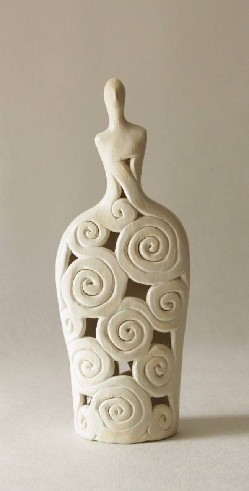
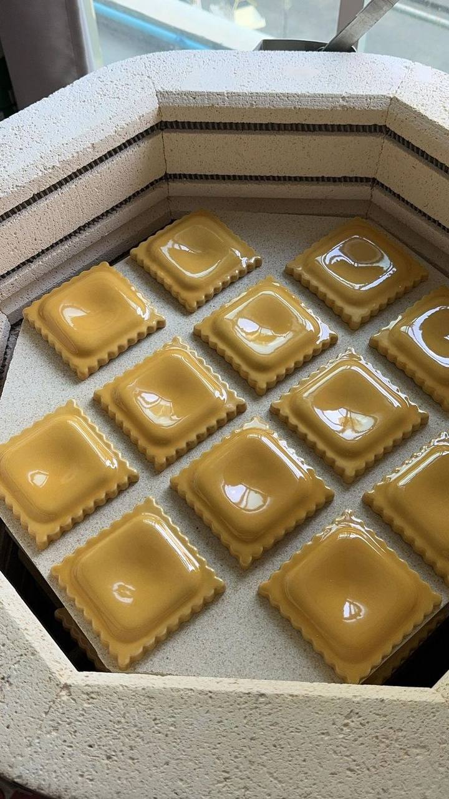
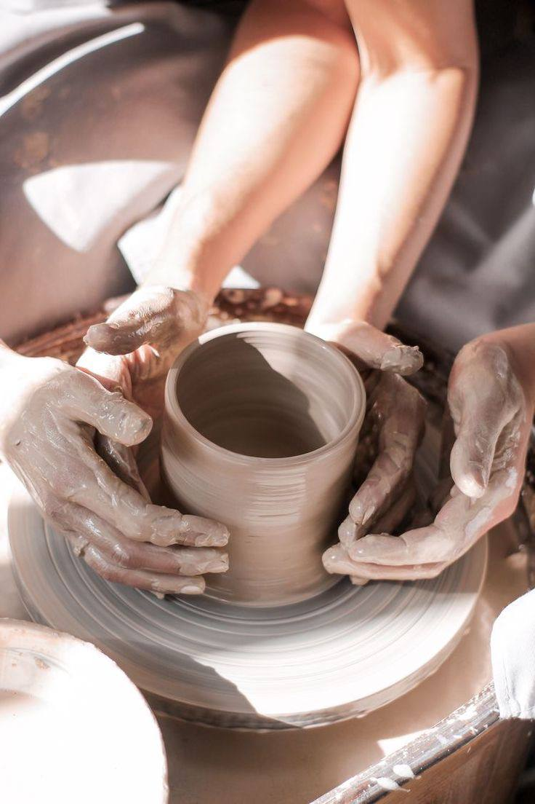
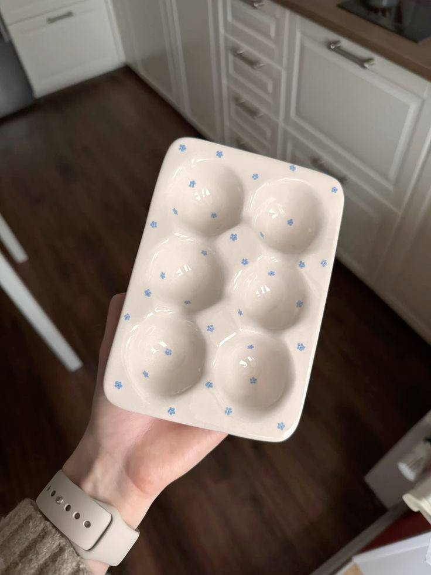
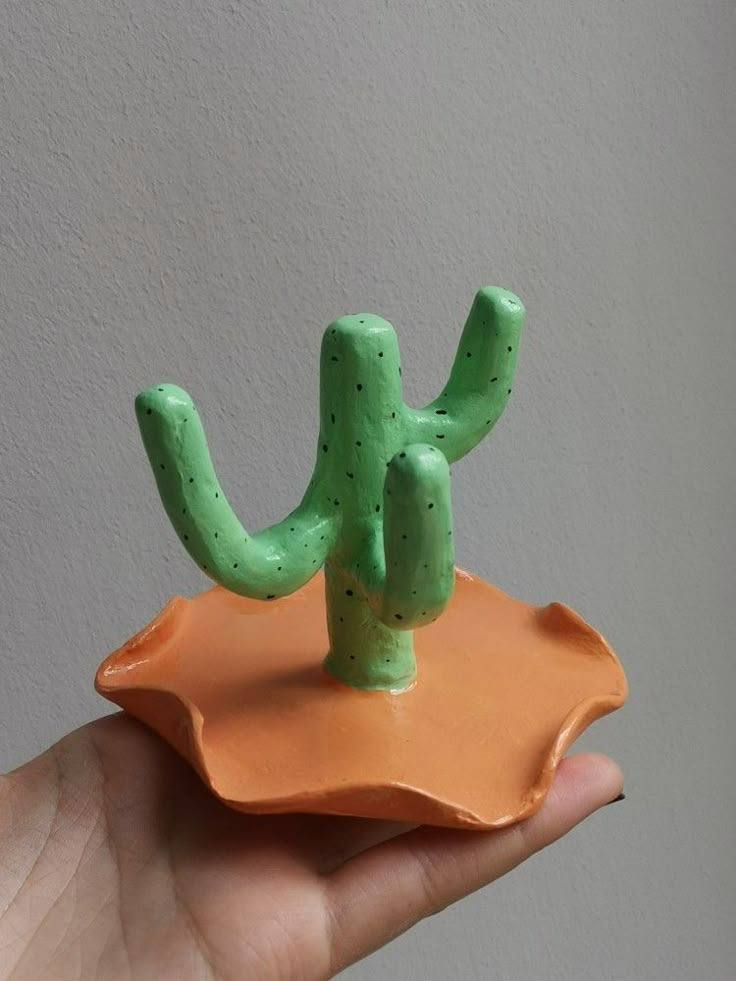

5 основных техник ручной лепки
Создание керамики без гончарного круга — древнее искусство, которое продолжает развиваться и сегодня. Эти традиционные методы позволяют создавать уникальные изделия с особым характером.
1. Лепка из жгутов
Одна из древнейших техник, где изделие формируется из глиняных "колбасок". Жгуты аккуратно укладываются по спирали, скрепляются между собой и сглаживаются. Идеально для создания высоких сосудов с толстыми стенками.
2. Пластовая техника
Раскатанные пласты глины вырезаются по шаблону и соединяются в единую форму. Позволяет создавать геометричные изделия с четкими гранями. Часто используется для изготовления плиток и декоративных панно.
3. Лепка из цельного куска
Техника, требующая большого мастерства. Изделие формируется из одного куска глины путем вытягивания и моделирования формы пальцами. Дает возможность создавать органичные, плавные формы.
4. Отминка в форму
Глина вдавливается в готовую форму (гипсовую, керамическую или деревянную). После подсыхания изделие извлекается. Используется для серийного производства одинаковых предметов.
5. Комбинированная техника
Сочетание нескольких методов в одном изделии. Например, основа создается из жгутов, а детали добавляются пластовым методом. Дает максимальную свободу для творчества.
Каждая из этих техник открывает безграничные возможности для творчества. Мастера часто комбинируют методы, создавая по-настоящему уникальные произведения керамического искусства.
← Вернуться ко всем статьям